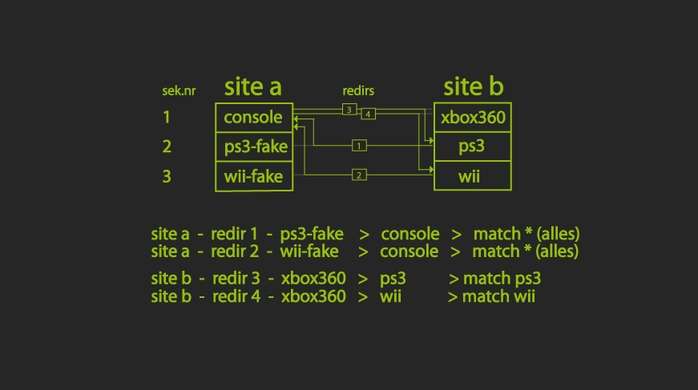

Bekanntes Problem:
Auf einer Site gibt es zB für x264 eine Sektion, auf der Zielsite gibt es dafür 2 Sektionen, und zwar 720p und 1080p...
Bisher wurde dann nicht auf die richtigen Sektionen geleitet. Daher gibt es jetzt Redirections:
Willst du dass ein
720p-Release von Site 1 aus Sektion x264 zur Site 2 in Sektion x264-720p
gesendet wird, gleichzeitig aber willst dass
1080p-Releases von Site 1 aus Sektion x264 zur Site 2 in Sektion x264-1080p
gesendet wird, gibt es jetzt die möglichkeit es so zu adden:
Gegebenheiten:
Site 1 ist Sektion x264 - die passende Sektion auf Site 2 ist x264-720p.
Auf Site 2 gibt es zusätzlich die Sektion x264-1080p, wofür es auf Site 1 keine Sektion gibt.
So muss man dafür sorgen dass in Sektion 720p nicht 1080p gesendet wird und umgekehrt, also in der Blacklist adden.
Dazu muss man dafür sorgen dass 1080p Releases in die andere Sektion gelenkt werden.
Dafür geht man im Sektionsmenü der Site 2 auf Redirections und trägt ein:
x264-720p + x264-1080p + 1080p
Das heisst: Sende Releases von x264-720p von Site 1 nach x264-1080p von Site 2, wenn 1080p drin vorkommt
Umgekehrt muss man auch dafür sorgen, dass die Sektion 1080p von Site 2,
die es auf Site 1 gar nicht gibt, nach x264 auf Site 1 geschoben wird.
Dazu erstellt man auf der Site 1 eine Dummie-Sektion, Namen kann man
vergeben wie man will, ich schreib immer "fake" mit rein, damit ich
später noch bescheid weiss. Directory zeigt dann zu der x264 Sektion.
Und erstellt dann auf der Site eine Redirection von der Dummie 1080p-Sektion nach x264 mit dem Match "1080p".
Zuletzt msus diese Sektion noch aktivier werden
Fertig
Mögliche Einträge:
Einfache Einträge, Wildcards (*abc*fgh*), Mehrfacheinträge wie entry|entry und der Eintrag SPORT sind möglich.
Man kann statt einem Match das im Release vorkommt eben auch SPORT als
match eintragen. Dann wird alles umgeleitet, was die matches im Release
hat, die bei /dteditsport eingetragen werden.
Und man kann nun, falls sich 2 Redirections zanken würden, eines der
beiden forcen mit einem ! vor dem match, zb. TV-EN+TV-x264+!1080p.
Wenn es nun noch eine Redirection mit TV-EN+TV-HDTV+HDTV gibt, wird immer die mit ! ausgeführt.
Denn bei einem Release wie Rls.rls.1080p.HDTV.x264-RLS wäre nicht klar
was nun vorrangig ist, HDTV oder 1080p. Hier ist es 1080p und das rls
wird nicht zu TV-HDTV, sondern zu TV-x264 geschoben.
Das Funktioniert natürlich nicht bei Mehrfacheinträgen mit entry|entry.
Hier mal ein Auszug aus meinem at-Fenster, hier hab ich eine Redirection
für Sport bei Site BB eingetragen, die wurde richtig geleitet und
geschoben, die anderen nicht, weil es eine TV Sektion ist und ich TV in
die Sektionsbeschreibung geschrieben hab, somit greift der Wankercheck
und sagt, NEIN. Denn es gibt kein ExxSxx oder ähnliches im
Releasenamen..das muss drin vorkommen, wenn man TV bei der Beschreibung
einträgt. Was drin steht sieht man hier: (TV X264 GER.)
[06:53:06] TV-X264-DE AA WWE.Friday.Night.Smackdown.2014-01-10.GERMAN.DL.WS.720p.HDTV.x264-aWake
62 - [06:53:06] TV-X264-DE AA > BB -
WWE.Friday.Night.Smackdown.2014-01-10.GERMAN.DL.WS.720p.HDTV.x264-aWake -
w - SPORT-DE*German* - INCOMING/TV-X264-DE > SPORT-DE (redirect)
SPORT
[06:53:07] Wankercheck halted TV-X264-DE > TV-X264-DE (TV X264
GER.)
WWE.Friday.Night.Smackdown.2014-01-10.GERMAN.DL.WS.720p.HDTV.x264-aWake
@ AA > CC (no.series)
[06:53:07] Wankercheck halted TV-X264-DE > TV-720P-DE (TV X264
GER.)
WWE.Friday.Night.Smackdown.2014-01-10.GERMAN.DL.WS.720p.HDTV.x264-aWake
@ AA > DD (no.series)
Zu guter letzt noch ein Schaubild, was die Handhabung nochmal an einem
anderen Beispiel zeigt, diesmal gibt es Site a mit nur console für
alles, auf site b gibts xbox, wii und ps3 getrennt.
Für die beiden Sektionen, die es auf der Site a nicht gibt, vergibt man
Fake Sektionen. Diese gezeigte Möglichkeit ist eine, ich nutze eben die
eine der 3 Sektionen von der einen Site für die Gesamte der anderen.
Ansonsten müsste man eine extra Sektion für Console machen, das erspare
ich mir nur und nutze einer der vorhandenen für Console..
Genauso mache ich es bei x264 und 1080p und 720p, die normale Sektion für x264 ist immer 720p, die extra Sektion ist 1080p.

Zuletzt noch wichtig: Niemals Fake-Sektionen aktivieren!!!
Also auf der Site "race in this section" aktivieren. Man braucht sie
nicht aktivieren um sie für Redirects zu nutzen, daher dann immer
deaktiviert lassen. Andernfalls, wenn man cbftp nutzt, könnte da mal was
durchrutschen und das kann üble folgen haben, denn cbftp bekommt
einfach die Obersektion, die beiden Sites, das rls und ab gehts, solange
von den Rules nichts dagegen spricht, da man für Fake sektionen niemals
Rules angibt, wird alles getradet.